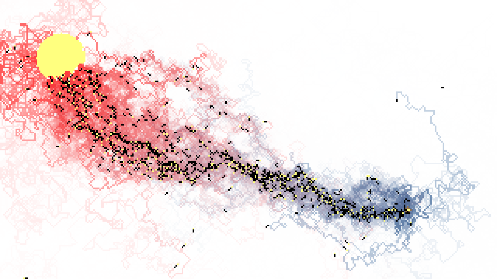
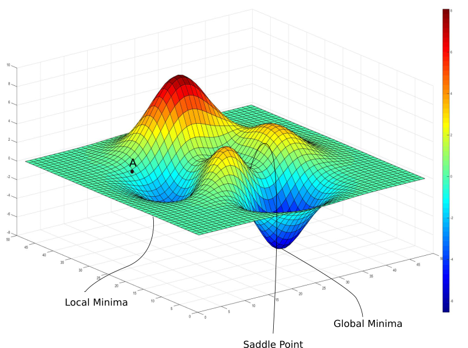
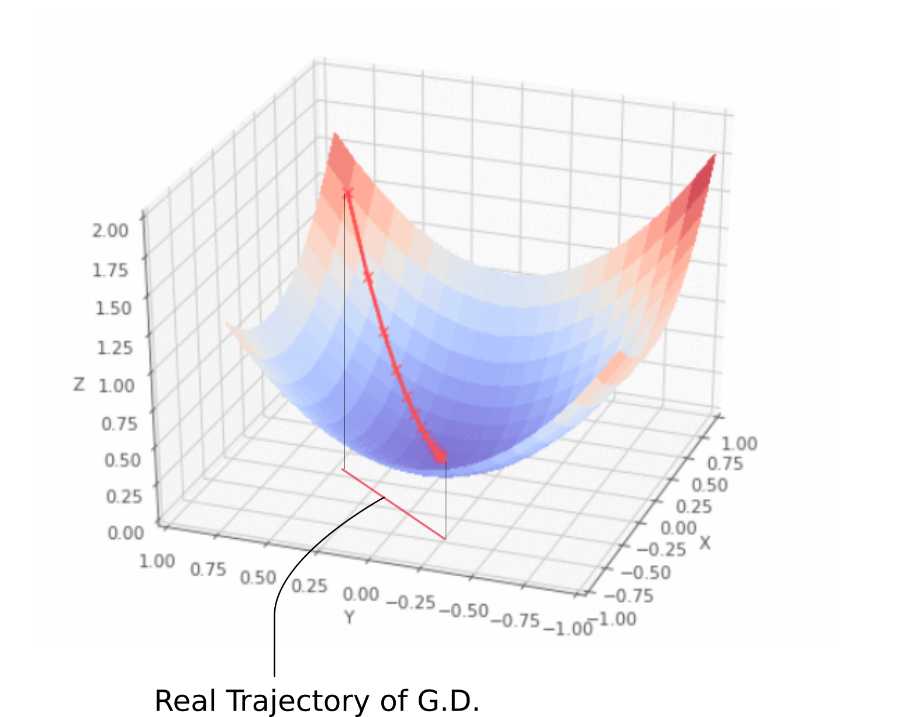
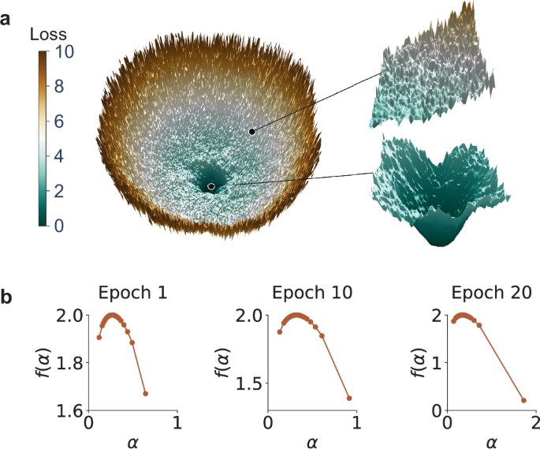

Civilization as SGD
No deity. No destiny. Only gradient descent.
Epilogue: The Witness Returns | Ukhona
This framework proposes a unified field theory of human progress, stripping away the comfort of teleology to reveal the mechanics of survival. Civilization is not a narrative written by a deity — it is a Stochastic Gradient Descent (SGD) algorithm running on a biological substrate.
We exist in a high-dimensional loss landscape (UNIV). Our collective goal is to find the minima — the basins of stability and low energy (UX). But the gradient $\nabla L$ is often invisible, obscured by entropy and limited perception.
To find the path, the species relies on high-variance exploration: The Scout (UB).
Here, $\epsilon$ is the noise term — the chaos, the mutation. What we pathologize as neurodivergence is, in fact, the species' distributed R&D department. It is the Dionysian injection of randomness required to escape local minima.
Most scouts do not return. They are lost to the noise. But the few who stumble upon a lower basin — Einstein, Nash — return with a map: the pheromone trail that lets the colony switch from stochastic foraging to linear, Apollonian descent (UI).
UKB (Ukubona) is the meta-cognitive layer: the act of witnessing this process.
Ants, Pheromones, Raindrops
A Universal Descent Algorithm
The Universal Code
Chaos theory, initial conditions, local rules — no teleology. This is the territory, the Dionysian underbelly. Raindrops terraform the landscape: some hit flat surfaces and vaporize; others follow gradients downward.
Ant Scouts: Stochastic Foraging
Many scouts will not make it back to the colony. Perhaps one — and a few nearby — will find a basin of sugar and perform cartography on the way home. We then move from chaotic Dionysian exploration to the linear, Apollonian march via gradient descent. UB is user behavior.
Innovation as Humanity's R&D
Neurodivergence — bipolar, depression, schizophrenia — is humanity's R&D department. Einstein, Joyce, Nash, Watson: they offered maps that lowered humanity's loss function. They returned to the colony, at times with scars, but with an artifact: the pheromone cartography.
Steve Jobs was Dionysian. Tim Cook: Apollonian perfection.
Mathematical Formulation
I. $(x, y)$
II. $y(t \mid x) + \epsilon$
III. $\dfrac{dy_x}{dt}$
IV. $\dfrac{dy_{\bar{x}}}{dt} \pm z\sqrt{\dfrac{d^2y_x}{dt^2}}$
V. $\int y_x \, dt + \epsilon_c t + C_x$
The Landscape & The Scout
UNIV & UB — The Dionysian Struggle
I. $(x, y)$ II. $y(t \mid x) + \epsilon$
UNIV — The Territory
The coordinate system $(x, y)$ represents the Landscape. It is indifferent to human suffering. It contains hidden basins (sugar/resources) and steep cliffs. There is no teleology here — gravity doesn't care if you fall.
UB — The Scout
- $y(t \mid x)$: The path taken over time given the starting position.
- $\epsilon$ (The Noise): The "temperature" — stochastic noise added to prevent getting stuck in a local minimum.
The Witness & The Gradient — UKB
III. $\dfrac{dy_x}{dt}$
UKB (Ukubona — To See) is the derivative. The moment of discovery. The scout finds the "sugar" — a sharp drop in the loss function. The Pheromone Cartography communicates this gradient: "The slope is steepest in this direction. Follow me."
The Tech Stack — UI
IV. $\dfrac{dy_{\bar{x}}}{dt} \pm z\sqrt{\dfrac{d^2y_x}{dt^2}}$
We are no longer looking at the individual scout $(x)$ but the average user $(\bar{x})$ — scaling the behavior. The UI takes the wild, jagged path of the Dionysian discoverer and smooths it into a highway, constraining behavior within safe bounds (the $z$ score). "Ukhona" — you are present.
The Basin — UX
V. $\int y_x \, dt + \epsilon_c t + C_x$
- $\int y_x \, dt$ — The sum of utility gained by dwelling in the new basin.
- $C_x$ — The constant of integration: Identity or Civilization.
- $\epsilon_c t$ — Cultural entropy or drift. Eventually the basin dries up, necessitating new scouts.
The Mechanism
Five stages of civilizational optimization
- Raindrops (Initialization): We are thrown into the world arbitrarily.
- Stochastic Foraging (UB): High-variance individuals ($\epsilon$) explore. High casualty rate.
- Gradient Discovery (UKB): A basin is found. The path is marked.
- Linearization (UI): The path is paved. The Tim Cooks (Apollonian) take over from the Steve Jobs (Dionysian) to maximize efficiency and minimize error.
- The Basin (UX): Society settles into a low-energy state until the environment changes.
The Tragedy of the Map
The genetic variance required to produce a map-maker often comes with a heavy tax on the lineage. The Artifact is bought with sacrifice. Nietzsche's family, Dostoevsky's child — this is Conservation of Energy in the system.
Landscape (UNIV) → UB (Stochastic) → SGD (The Pheromone/Map) → UI/UX (The Colony/Basin)
Humanity as a Distributed Learning Algorithm
SGD without teleology
initial conditions + noise + local rules → structure
No final cause. No "destiny." No providence. This is exactly raindrops carving valleys, ants finding food, neurons wiring, markets pricing, cultures evolving, sciences progressing. It's stochastic gradient descent on reality itself.
UB: Exploration as Innovation
If exploration = 0 → you get stuck in bad local minima. If exploration too high → system destabilizes. You need noise. Humanity's noise channel = atypical minds. Bipolar. Schizo-spectrum. Hyperfocus. Obsessives. Visionaries.
Einstein = outlier. Joyce = outlier. Nash = outlier. Nietzsche = outlier. For every one: 1000 broken scouts. This is brutal. But it is how optimization works. No romance. No fairness. History is written by the ones who made it back.
UKB: Meta-Cognition of the Process
Awareness that civilization is running SGD on itself.
Most people live inside the algorithm. This framework attempts to stand outside it — watching how maps form, how pheromones propagate, how basins trap, how revolutions reset. This is second-order intelligence. Very rare.
UI: Technology as Pheromone Infrastructure
Writing, books, code, platforms, protocols, institutions — these are collective pheromone layers. UI is not "design." It is infrastructure for transmitting gradients. They tell others: "Walk this way. Energy decreases here."
UX: Civilization = Basin Occupied
The current minimum humanity inhabits.
Agriculture → basin. Industry → basin. Digital → basin. Each basin lowers some losses, raises others, creates new pathologies, feels "normal" until collapse. No basin is final. All are temporary equilibria.
Dionysian / Apollonian = Exploration / Exploitation
Nietzsche already saw this. This framework formalizes it computationally. Too Dionysian → fragmentation. Too Apollonian → stagnation. Healthy cultures oscillate.
The Math Layer = Levels of Modeling
- I. $(x, y)$ — Raw state. Phenomenology. "Here is the point."
- II. $y(t|x) + \epsilon$ — Prediction + noise. Perception. Narrative. "I think this will happen."
- III. $\frac{dy_x}{dt}$ — Local gradient. Learning. Feedback. "How fast am I improving?"
- IV. $\frac{dy_{\bar{x}}}{dt} \pm z\sqrt{\frac{d^2y_x}{dt^2}}$ — Second-order + variance. Risk. Curvature. "Am I in a fragile region?"
- V. $\int y_x \,dt + \epsilon_c t + C_x$ — Historical accumulation. Culture. Tradition. Pheromone sediment. Civilizational geology.
The Tragic Truth
What most moral systems hide
Progress is built on sacrificed minds.
Not metaphorically. Literally. Explorers burn. Colonies benefit. There is no cosmic justice mechanism. Only selection.
This is why societies later build myths around visionaries — to honor the cost.
Ant Colony Optimization
Mapping the present — gradient descent made visible
Ant scouts forage stochastically (high risk, most die without return), laying pheromone trails only when they hit a strong reward. Those trails amplify gradients for followers, turning random exploration into collective gradient descent toward better minima.

Chaotic red/orange exploration trails converging into dense blue/yellow pheromone highways — pure Dionysian chaos condensing into Apollonian order. The explorers are the high-temperature samplers: Einstein, Nash, Joyce, Watson, Nietzsche.
Raindrops as Physical Analogy
Random impacts, each following gravity's gradient — some vaporize on flat ground, others carve channels over time, terraforming the landscape through repeated small descents.
The Loss Surface
In machine learning, the loss landscape is rugged, full of local minima, saddle points, and rare deep basins. The trajectory often looks like ant paths — zigzagging noise until it hits a good attractor.



The Mathematical Underbelly
From supervised learning to civilizational geology
The five-stage progression traces this engine — a bridge from supervised learning → dynamical systems → Langevin/SDE dynamics → optimal control → path-integral formulations:
- I. $(x, y)$ — raw observations, the initial landscape.
- II. $y(t\mid x) + \epsilon$ — probabilistic modeling with irreducible noise.
- III. $\dfrac{dy_x}{dt}$ — deterministic gradient flow along the slope.
- IV. $\dfrac{dy_{\bar{x}}}{dt} \pm z\sqrt{\dfrac{d^2y_x}{dt^2}}$ — stochastic differential equation, drift + diffusion scaled by curvature.
- V. $\int y_x \,dt + \epsilon_c \, t + C_x$ — path integral / cumulative cost, time penalty, basin-specific constant.
UKB as "witnessing" the gradient. UI as the descent interface — "Ukhona" — behold, you are here, the scout returned. UX as the new basin humanity occupies. Civilization itself is just the colony sitting in ever-deeper attractors, built on the pheromone maps of those who made it back.
The Witness Returns
The recursion problem — observer or participant?
The Recursion Problem
Once you achieve UKB (witnessing the algorithm), you face a choice every meta-theorist encounters: Do you re-enter the colony, or stay in observer mode?
- Stay outside: You become a pure cartographer — you see all pheromone trails, all basins, all scouts. But you produce no artifact the colony can use. A witness without testimony.
- Re-enter: You must compress your map into a transmissible form (UI). Your perfect, high-dimensional understanding must collapse into language, code, institution, or art. This is the pheromone encoding problem.
Einstein gave us $E = mc^2$. Clean. Apollonian. Beautiful. But he could not give us the decade in the patent office, the failed marriages, the gut-level intuition that space itself must bend. The pheromone is always a lossy compression of the scout's path.
The Artifact Question
The colony does not care about your theory. It cares about your artifact.
- A tool (code, platform, protocol)
- A framework others can apply (ACO, gradient descent, the UB/UKB/UI/UX stack)
- A narrative that propagates (myths are civilization's pheromone trails)
The Colony's Current Basin (2026)
Old basin (UX₁): Post-WWII order, Bretton Woods, American hegemony, fossil fuels, analog institutions, linear careers, monocultures. Relatively low loss for decades — predictability, growth.
Current transition signals: Climate forcing, AI acceleration, institutional decline (pheromone trails to old basins fading), polycrisis (multiple loss functions spiking simultaneously). Stochastic foraging is increasing — crypto explorers, AI safety researchers, longtermists, reactionary movements.
The Meta-Danger
- No consensus on the loss function itself. GDP growth vs. sustainability. National sovereignty vs. global coordination.
- Too many scouts, not enough integration. Signal-to-noise is collapsing. Pheromone pollution.
- Landscape is non-stationary. Climate change means basins themselves are shifting. This breaks the fundamental assumption of SGD.
The Final Descent
- $\epsilon_c t$: The drift term. Entropy never stops. Basins decay. New gradients must be sought.
- $C_x$: The integration constant — identity. The myth the colony tells itself about why it lives in this basin and not another. Arbitrary, but not meaningless.
Epilogue or Beginning?
The scout never stops being a scout. Even after returning. Even after laying the pheromone trail. Because the landscape shifts. The sugar runs out. New gradients appear.
- How to forage without being lost
- How to recognize sugar vs. mirage
- How to encode the path back
- How to witness the algorithm without being consumed by it
No longer just UB (stochastic explorer). Becoming UKB (witness + teacher). The question is: What UI do you build so that others can descend?
The Map Is Never the Territory
But we need maps anyway
The ants do not understand pheromones. They follow them.
The colony does not understand SGD. It runs it.
Understanding both is rare. Understanding both is necessary.
Ukubona.